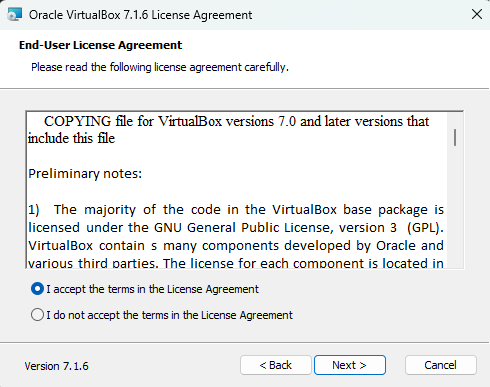
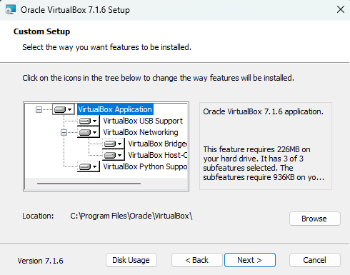
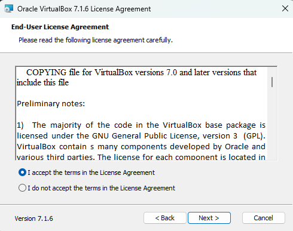
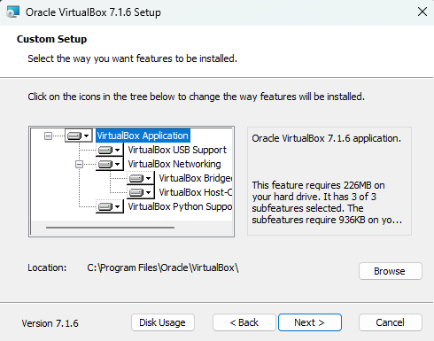
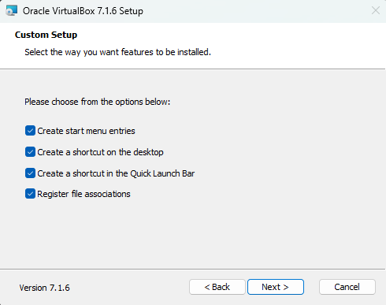
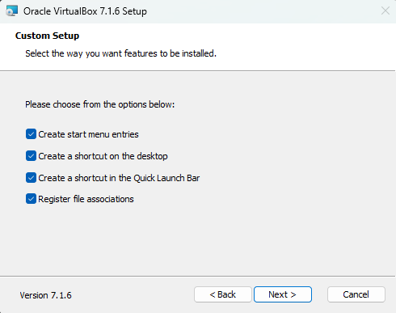
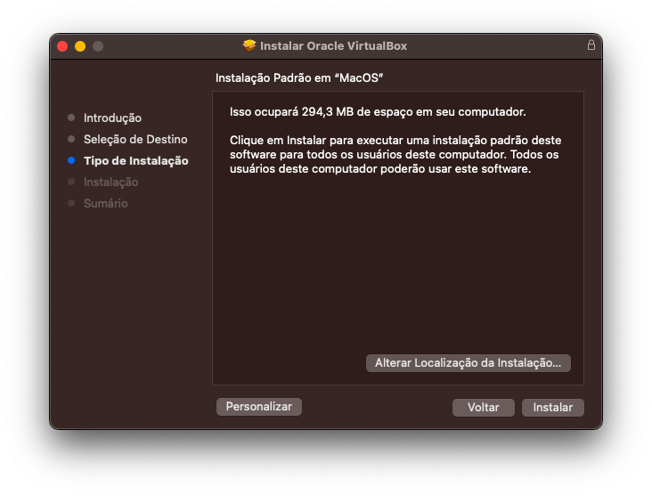
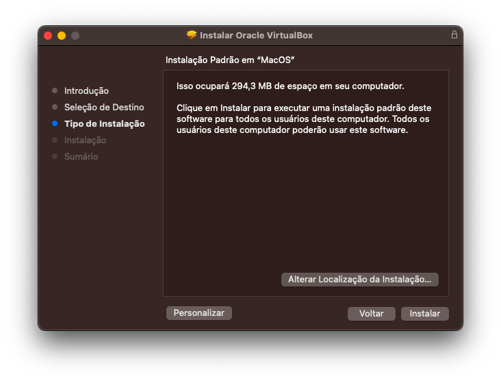

Instalação do VirtualBox
Iniciando a Instalação
- Vamos dividir este tópico em dois. Clique no sistema operacional que você usa para acessar o conjunto de instruções correto:
- Se você já instalou o VirtualBox, pode seguir para a Instalação do Linux
Instalação no Windows
- Neste exemplo estamos usando o Windos 11 24h2 e o instalador do link mostrado na primeira página.
- Dê um duplo clique no arquivo que você baixou e siga a instalação.
 



{kind=link}
{kind=link}
 

{kind=link}
{kind=link}


Preparando a Instalação do Linux
Instalação no MacOS
- Neste exemplo estamos usando MacOS Ventura e o instalador do link mostrado na primeira página.
- Após o download, execute o arquivo de extenção dmg. Ele montará um disco virtual com a instalação do VirtualBox.
 

{kind=link}
{kind=link}

{kind=link}
Nos últimos momentos da instalação, aparecerá este aviso no canto superior direito, basta fechar.
{kind=link}
Preparando a Instalação do Linux Ubuntu 22.04
- A partir deste ponto, tanto a instalação no Windows como no Linux os passos serão os mesmos. Estaremos usando as imagens da instalação no Windows por ser o SO mais utilizado, se você está usando MacOS e tiver dúvidas PERGUNTE a sua dúvida é muito importante para todos!!
Com o VirtualBox aberto, você deve clicar em NOVO:

Na tela que abrir, você dará o nome da Máquina Virtual e o caminho. Em seguida os campos de:
Imagem ISO :Selecione o arquivo de Imagem ISO que você baixou. Encontrado nos links na pagina inicial desta atividade.
Tipo :Linux;
Subtipo :Ubuntu;
Versão :Ubuntu (64-bit);
{kind=link}
Clique em Próximo
Agora escolha quanto do seu hardware ficará "dedicado" à máquina virtual.
Usualmente ele recomenda o mínimo necessário para o sistema funcionar, é extremamente recomendável que dedique um pouco mais do hardware. Em situações do dia a dia é interessante, oa menos, metade dos seus núcleos e metade de sua memória RAM. Mas cuidado para não entrar na área em vermelho, se deixar pouco recurso para o sistema operacional da máuqina, você travará o seu computador assim que iniciar a máquina virtual.

Clique em Próximo
{kind=link}
Chegou o momento de dizer o tamnho do seu disco virtual.
Não recomendo deixar menos de 40G. Não há necessidade para pânico pois a alocação deste disco é dinâmica, você não ficará com todo o espaço "preso" neste aruivo. Para isso é só não clicar no checkbox.
Clique em Próximo

Sumário
Nesta tela você poderá revisar tudo o que escolheu e finalizar a configuração da sua máquina virtual, clicando em Finalizar.
Os próximos passos serão os mesmos para as máquinas virtuais e a instalação diretamente no computador.
Próximo passo: Instalação do Ubuntu